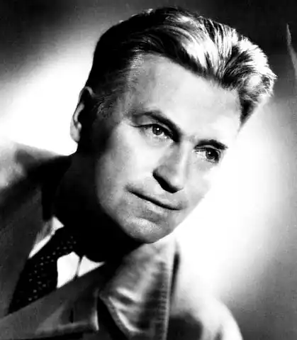

Олдінгтон Річард (Aldington, Richard — 08.07. 1892, Гемпшир, Англія — 27.07.1962, Сюріан-Во, Шер, Франція) — англійський письменник. Олдінгтон народився у сім'ї провінційного адвоката, великого аматора літератури. Дитинство та юність письменника минули у Дуврі, графство Кент. Олдінгтон закінчив Дуврський коледж — військовий навчальний заклад. Навчався у Лондонському університеті, але через брак коштів був змушений його покинути. Усе життя Олдінгтон був невтомним трударем, пережив злети і падіння; був зігрітий теплом і сердечністю щирих шанувальників його таланту.
Олдінгтон належить до т.зв. "втраченого" покоління письменників Заходу, був учасником Першої світової війни, яка визначила його світогляд. Літературну діяльність розпочав як поет, приставши до імажизму, модерністської течії в англійській та американській літературі, ватажком якої був Езра Паунд, американський поет, що замешкував тоді в Англії. Не приймаючи сучасного суспільства як доби варварства, вульгарності та комерційного духу, імажисти проголосили "чисту образність" основою своєї програми. Свої перші вірші Олдінгтон опублікував в антології "Імажисти " ("Des Imagistes", 1914). Олдінгтона приваблюють чистота і велич античного світу; у мистецтві Стародавньої Греції він часто віднаходить образи для своїх поетичних творів: "Образи" ("Images", 1915) та "Образи старі й нові" ("Images Old and New", 1916). Упродовж трьох десятиріч О. видасть понад 15 збірок віршів та поем.
У 1917 р. Олдінгтон добровольцем пішов на фронт. Один із провідних поетів імажизму переосмислив життя і світ, в окопах війни по-новому глянув на справжні цінності. Найважливішою з них він визнав людину. Війна стала для нього тим рубежем, який поклав початок новому періоду в житті і творчості. Побачивши кров і жорстокість, переживши страх і відчай, поет звернувся до інших образів і тем. Перебування в окопах зіткнуло Олдінгтона з "брутальними істинами", тому його вірші воєнних літ звучать різким контрастом до його ранніх творів. Збірка "Образи війни" ("Images of War", 1919) відображає нове бачення світу. За настроєм, осмисленням та оцінкою подій воєнна лірика Олдінгтона тісно пов'язана з усією його повоєнною романічною творчістю. Витоки проблематики олдінгтонівських романів — у його віршах воєнних літ. Поет сам вказував на спадкоємність між антивоєнними віршами та романами. Перше повоєнне десятиліття — час упертої праці та глибоких роздумів. Олдінгтон працював як літературний критик, поет, перекладач. Коло його зацікавлень — С де Бержерак, Ш. де Лакло, Дж. Боккаччо, Вольтер, Р. де Гурмон та ін. Протягом наступного десятиліття (з 1929 до 1937 р.) вийшло друком сім романів Олдінгтона, що становлять ніби єдиний цикл, — це "Смерть героя" ("Deathofa Hero", 1929), "Донька полковника" ("The Colonel's Daughter", 1931), "Усі люди — вороги" ("All Men Are Enemies", 1933), "Жінки мусять працювати" ("Women Must Work", 1934), "Справжній рай" (1937), "Семеро проти Рівза" ("Seven Against Reeves", 1938), "Знехтуваний гість" ("Rejected Guest", 1939). Вони відображають значні явища життя Англії першої третини XX ст. "Смерть героя" — найкращий твір Олдінгтона і найвизначніший з-поміж англійських антивоєнних романів, присвячених Першій світовій війні, що зробив ім'я Олдінгтона всесвітньо відомим."Смерть героя", поряд з книгами Е. М. Ремарка, Е. Хемінгвея, Р. Грейвза, Е. Бландена, З. Сассуна й ін., написана від імені покоління, яке пройшло крізь пекло війни, і про це покоління. За зізнанням Олдінгтона, почуття гніву було тією силою, що зробила його романістом. Він почав писати роман відразу ж після перемир'я, ще перебуваючи на лінії фронту в бельгійському селі; взявся за перо, аби висловити бодай частину того, що накопичилося за кілька років перебування в окопах, але спроба виявилася передчасною, рукопис було відкладено. Через десять років, "замалим не того самого дня", автор повернувся до нього, аби очистити душу від того, що отруювало її багато літ. Війна пробудила в Олдінгтоні зненависть до "старої доброї Англії", що послала своїх синів на смерть. Уже в самому заголовку звучить іронія, їдка, зла, глибока. Її пафос звернений проти війни, ура-патріотичних закликів, шовінізму. Герой роману — Джордж Вінтерборн, митець, журналіст, буржуазний інтелігент, — гине на фронті у двадцять шість літ. Обривається молоде життя. Факт трагічний, але, як з'ясовується, далебі не героїчний, більше того — безглуздий. Загибель Вінтерборна сприймається його фронтовим другом як самогубство: за тиждень до перемир'я, на світанку 4 листопада 1918 р., людина в хакі звелася без будь-якої видимої причини у повен зріст, ставши мішенню для ворожого кулемета. "Смерть героя! Яка насмішка, яке огидне лицемірство! Мерзенне, підле лицемірство! Смерть Джорджа для мене — символ того, яке все це мерзенне, підле і нікому не потрібне, яка це ідіотична й нікому не потрібна тортура", — вигукує фронтовий товариш. Ім'я Вінтерборна з'явилося на меморіальній дошці, він заслужив надгробний камінь. Та й тільки. Смерть Джорджа особливо нікого не засмутила, близькі доволі спокійно сприйняли його смерть, армія виконала свій обов'язок, віддавши одному з тисяч полеглих належне, а однополчанам було просто не до нього. Уся безглуздість цієї загибелі стає збагненною лише після того, як у ретроспективному русі відтворюється перед читачем попереднє життя Вінтерборна, а через нього — картина суспільного життя Англії першого десятиріччя XX ст. Олдінгтон засуджує жорстокість війни: люди гинуть, навіть не знаючи, в ім'я чого вони воюють. Автора цікавлять причини того, що відбувається, витоки трагедії. Майже одночасно з першими романами Олдінгтона вийшло дві збірки його оповідань "Дороги до слави" ("Roads to Glory", 1930) та "Короткі відповіді"("Quiet Answers", 1932). Збірки витримали в Англії кілька видань, але були прохолодно зустрінуті критикою. Оповідання є важливим доповненням до романів Олдінгтона. Вони часто присвячені окремим епізодам війни, її трагічним наслідкам, відображають повоєнний побут і звичаї. З темою війни виявляється спаяною й тема родини, вірніше, її цілковитої руйнації. "Донька полковника " — історія дівчини, яка на свій лад постраждала через війну, стала жертвою банального існування у лоні родинного життя. Енергійна Етта Моррісон рветься до незалежності ("Жінки мусять працювати "); поза суспільством, на острові Еа, намагається створити своє щастя Ентоні Кларендон ("Усі люди — вороги"). Пародією на родинне життя виглядає те існування, яке провадять батьки та сестра Кріса Хейліна ("Справжній рай"). Життя Девіда Норріса ("Знехтуваний гість") скалічене двома світовими війнами. Романи О. 30-х pp. доповнюють один одного, розвиваючи загальні теми. Незадовго до Другої світової війни Олдінгтон опублікував поему "Кришталевий світ" ("The Crystal World", 1937). Це своєрідна лірична варіація острова Еа. Олдінгтон звертається до філософського осмислення життя: створити своє щастя на землі можливо лише всупереч усім законам, поєднавши пристрасть і страждання. Другу світову війну Олдінгтон сприйняв як катастрофу, ще страхітливішу, ніж перша. Письменник покинув Англію, рятуючись від цькування буржуазної преси, він перебрався на кілька років у США, а потім переїхав у Францію, де й помер. Протягом свого останнього творчого періоду Олдінгтон написав книгу спогадів "Життя задля життя"("Life for Life's Sake", 1940), перейняту настроями смутку, розчарування та песимізму. У 1946 р. він видав роман про любовні пригоди Казанови ("The Romance of Casanova"). Широкою ерудицією, витонченістю стилю вирізняються праці Олдінгтона двох останніх десятиліть. Захопливо, з великим талантом писав він про колег по перу, створив романізовані біографії Д.Г.Лоуренса "Портрет генія, але..."("Portrait of a Genius, but...", 1950), Р.Л. Стівенсона — "Портрет бунтівника" ("Portrait of a Rebel". 1957) та ін. Злісні напади критики викликала остання значна книга Олдінгтона — біографія відомого англійського розвідника, полковника Т. Ф. Лоуренса. котрий багато років жив у арабських країнах. "Лоуренс Аравійський" ("Lawrence of Arabia". 1955). Спираючись на документальні матеріали, Олдінгтон показав непривабливе обличчя легендарного "героя". Олдінгтон — вдумливий критик. Він перший в Англії писав про М. Пруста, рецензував "Улісса" Дж. Джойса, йому належить найкраща монографія про визначного провансальського поета Ф. Містраля ("Introduction to Mistral", 1956). Олдінгтон товаришував із Лоуренсом, листувався з Р. де Гурмоном та М. Прустом. Улітку 1962 р. Олдінгтон відвідав СРСР. Повернувшись у Францію, де він мешкав у невеличкому селі, неподалік від Сюрі-ан-Во, Олдінгтон через кілька днів помер.